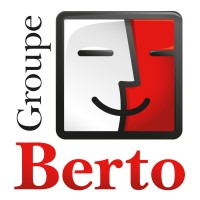

Mon Stage 2ème année

Groupe Berto
Secteur : Transport
Localisation : Avignon
Période : 5 janvier 2026 - 13 février 2026
Missions Réalisées
Codage PowerShell
Création de scripts d'automatisation pour les tâches d'administration et la gestion du domaine. Déploiement logiciel automatisé.
Déploiement Windows 11
Installation et migration de postes informatiques vers le système Windows 11 avec les configurations de l'organisation.
Support Utilisateur
Service desk et assistance aux employés sur les incidents réseaux, les problèmes applicatifs et le matériel.
Maintenance Serveur
Maintenance préventive et corrective des serveurs physiques et de l'hyperviseur pour assurer la haute disponibilité.